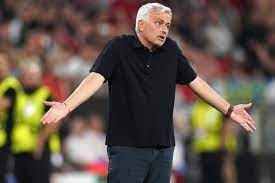
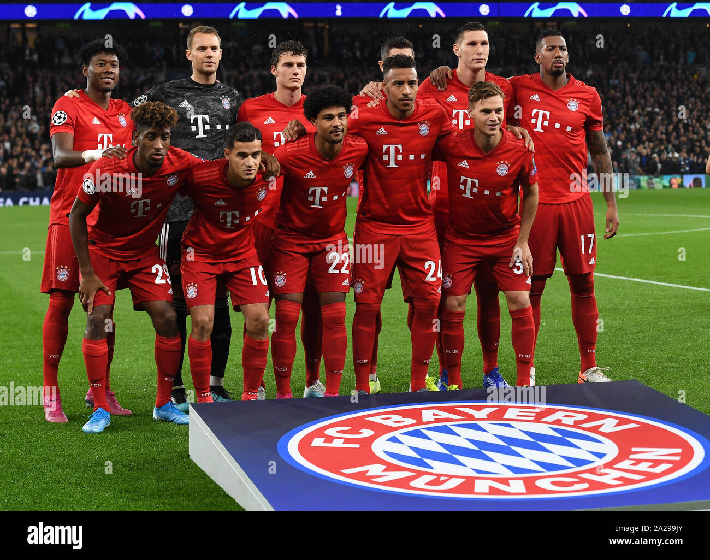

WHAT IS NEXT FOR KLOPP?

Klopp is set to begin his new role as Global Head of Soccer for Red Bull on January 1, 2025. This executive position will mark a new chapter in Klopp's storied from football following a nearly nine-year stint at Liverpool, where he became one of the most celebrated managers in the club's history. Jurgen Klopp’s connection to Red Bull is a fascinating, yet somewhat unexpected, partnership that has raised many eyebrows across the football world. Klopp, admired for his passionate leadership at clubs such as Borussia Dortmund and Liverpool, now finds himself aligned with an entity known for its corporate influence in the world of sport. As Simon Hughes from The Athletic explored in his insightful piece, this relationship was years in the making, stemming from a mutual respect between Klopp and the late Dietrich Mateschitz, Red Bull’s co-founder.
LATEST NEWS
41 minutes ago: Why Ferguson didn't attend Man Utd win after INEOS dismissal
1 hour ago:
Why De Ligt was forced off and not allowed back as Man Utd fume
1 hour ago:
'Have you forgotten?' - Angry Mainz fans send message to Klopp
1 hour ago:
Alternate MLS Awards: Messi's funniest 2024 moments
1 hour ago:
Welcome back Mullin! Wrexham talisman's early strike secures win
1 hour ago:
Montpellier vs Marseille Predictions: Rowe to relish his opportunity
2 hours ago:
Ten Hag furious as Brentford score with De Ligt's head cut open
2 hours ago:
Chelsea wonderkid sparks 'tug of war' between England & USMNT
2 hours ago:
Another fitness issue? Injury-plagued De Jong suffers fresh setback
3 hours ago:
16 seconds! Mullin bags lightning-quick opener for Wrexham
3 hours ago:
Slot addresses Trent's Liverpool focus amid Real Madrid links
3 hours ago:
Evans at LB?! Man Utd fans perplexed by Ten Hag XI
3 hours ago:
'Bring him in!' - Arsenal fans want Kudus after Spurs brawl
3 hours ago:
Son rips West Ham apart in fiery London derby
4 hours ago:
Kulusevski matches Ibrahimovic's Premier League goal tally
Latest News
'The Crying One': Mourinho's demise continuing at Fenerbahce

Champions League failure Mourinho vowed to "bring eyes to Turkish football" at his first press conference, and highlighted Super Lig title success as "the main dream". But the Champions League was his first order of business, as Fenerbahce made it to the third qualifying round after an unconvincing 6-4 aggregate victory over unfancied Swiss outfit Lugano, only to come unstuck against Lille, who finished 17 points behind Ligue 1 champions Paris Saint-Germain last season. The two teams were locked at 2-2 at the end of the two legs, and Lille went down to 10 men in the first half of extra-time, but Fener conceded a penalty just two minutes before the final whistle, which Jonathan David converted to send Mourinho's side crashing out. This was a huge opportunity for Fenerbahce to return to the Champions League proper after a 15-year absence, and they probably would have been able to edge past a decidedly average Lille side had it not been for Mourinho's overly-defensive tactics. But in trademark style, the 61-year-old took zero responsibility, instead blaming VAR for the penalty that decided the tie while repeating the infamous "I prefer not to speak" line that saw him become a meme during his second spell at Chelsea. Mourinho also attempted to downplay the significance of the result, adding: "It would be great to play in Champions League, but we would never have a chance to go far in the competition. The Europa League is more adapted to our level."
Thomas Muller, Robert Lewandowski & the 25 best Bayern Munich players of the 21st century so far – ranked. So many great players have helped Germany's most successful club stay at the top in the past quarter-century, but how many will go down as legends?
Bayern Munich have won 42 trophies since the turn of the millennium, including 17 Bundesliga titles and 10 DFB Pokals. They have set extraordinary new standards of dominance in Germany, while also lifting the Champions League three times, enhancing their status as one of the biggest clubs in world football. In the 20th century, Bayern were blessed with world-class players such as Franz Beckenbauer, Gerd Muller, Karl-Heinz Rummenigge, Paul Breitner and Lothar Matthaus - all of whom played vital roles in building a lasting dynasty. They set the bar impossibly high, but new heroes have emerged over the last 25 years to ensure that Bayern have continued to reach the same giddy heights. These players have embraced the club's 'Mia san Mia' ('We are who we are') motto with every fibre of their being. Talent can get you through the door, but only those with an iron-strong will and insatiable hunger to win leave a lasting mark at the Allianz Arena. GOAL has thus ranked the top 25 Bayern players of the 21st century so far who fit into that bracket, including some who are still building their legacies in Bavaria.